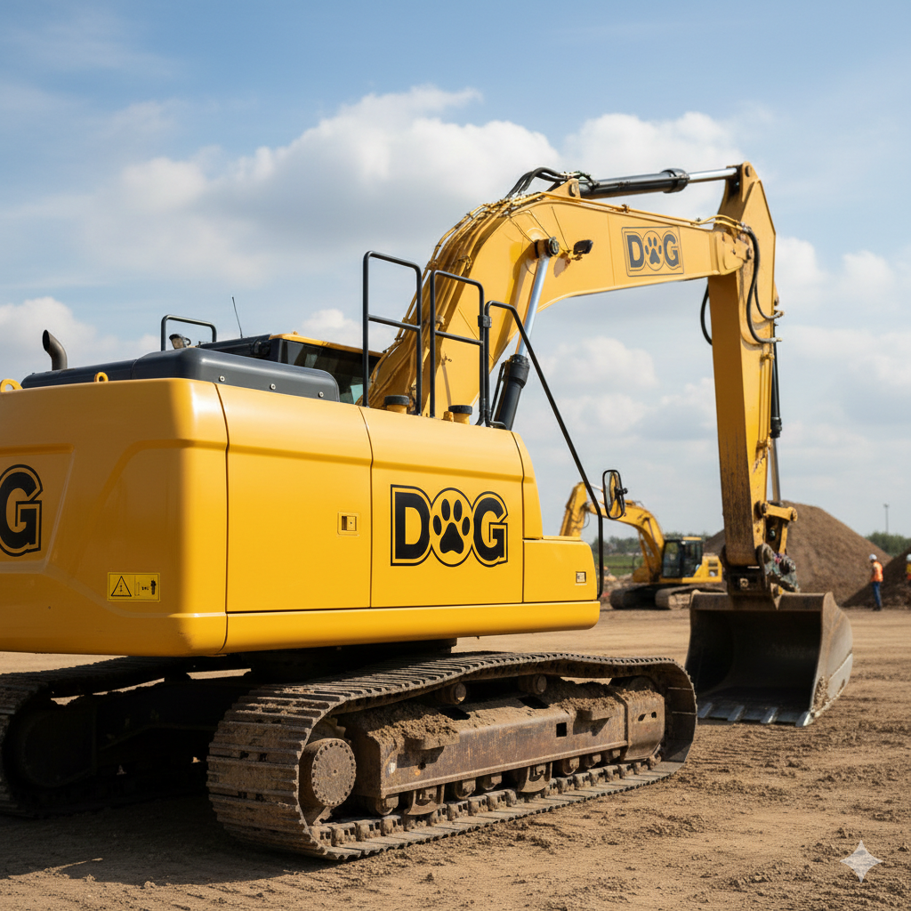
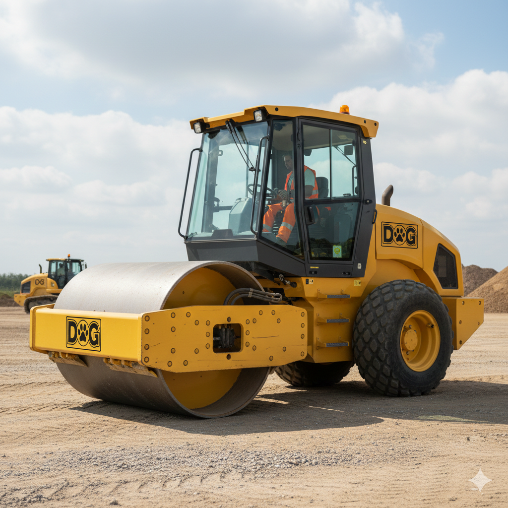

Nuestra Flota de Poder
Explore nuestra selección de maquinaria pesada diseñada para los trabajos más exigentes.
Excavadora DX-200
Diseñada para los terrenos más exigentes, la DX-200 ofrece una fuerza de excavación superior y una estabilidad inigualable en proyectos de minería y movimiento de tierras a gran escala. Su sistema hidráulico de alta precisión permite ciclos de trabajo más rápidos, optimizando el consumo de combustible en cada jornada.
Aplanadora Serie Mastín
Garantiza bases sólidas y acabados perfectos en pavimentación. Con un tambor de alta resistencia y sistemas de vibración ajustable, este compactador es indispensable para la preparación de carreteras y plataformas industriales, asegurando una densidad de suelo uniforme en menos pasadas.
Camión Gran Danés

Potencia bruta para el manejo de agregados y materiales pesados. Equipado con un cucharón reforzado y un motor de alto torque, este cargador está diseñado para maximizar la productividad en canteras y plantas de concreto, ofreciendo una visibilidad de 180° para una operación segura.